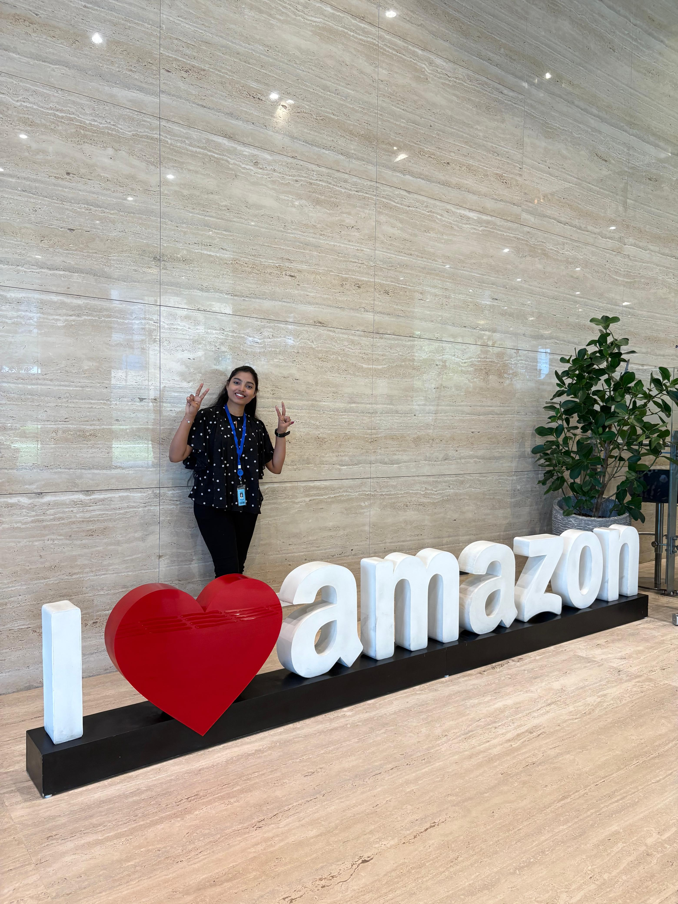
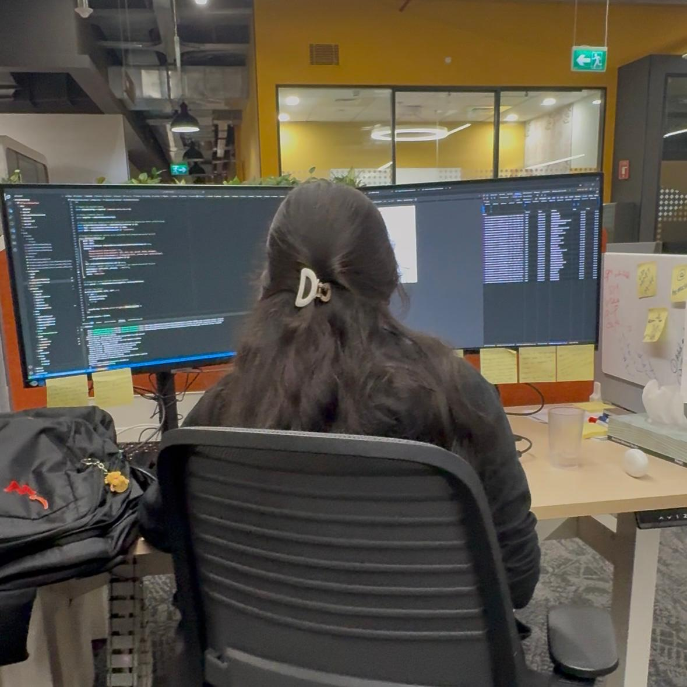
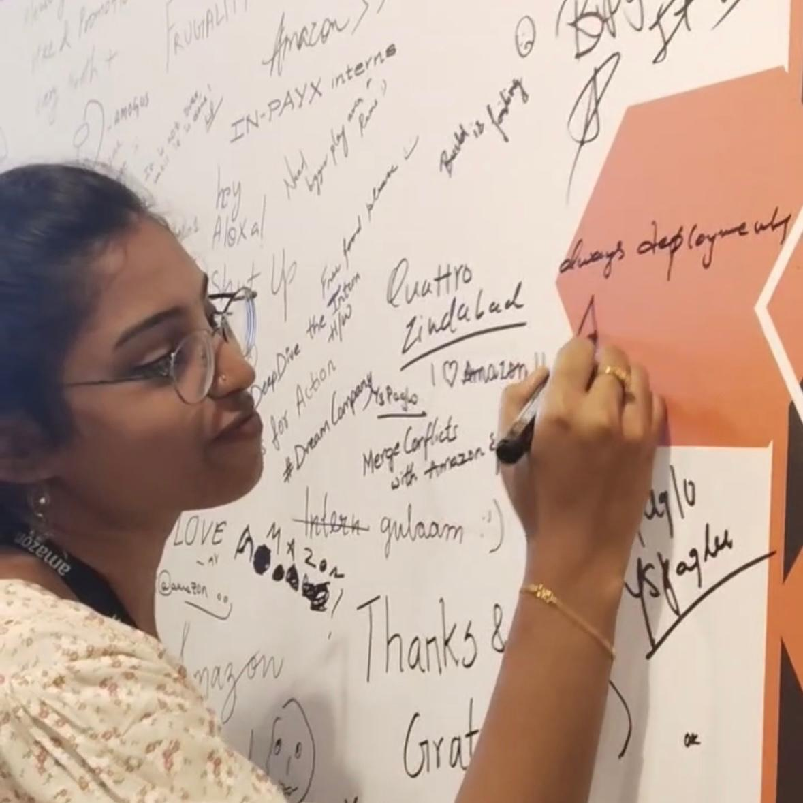
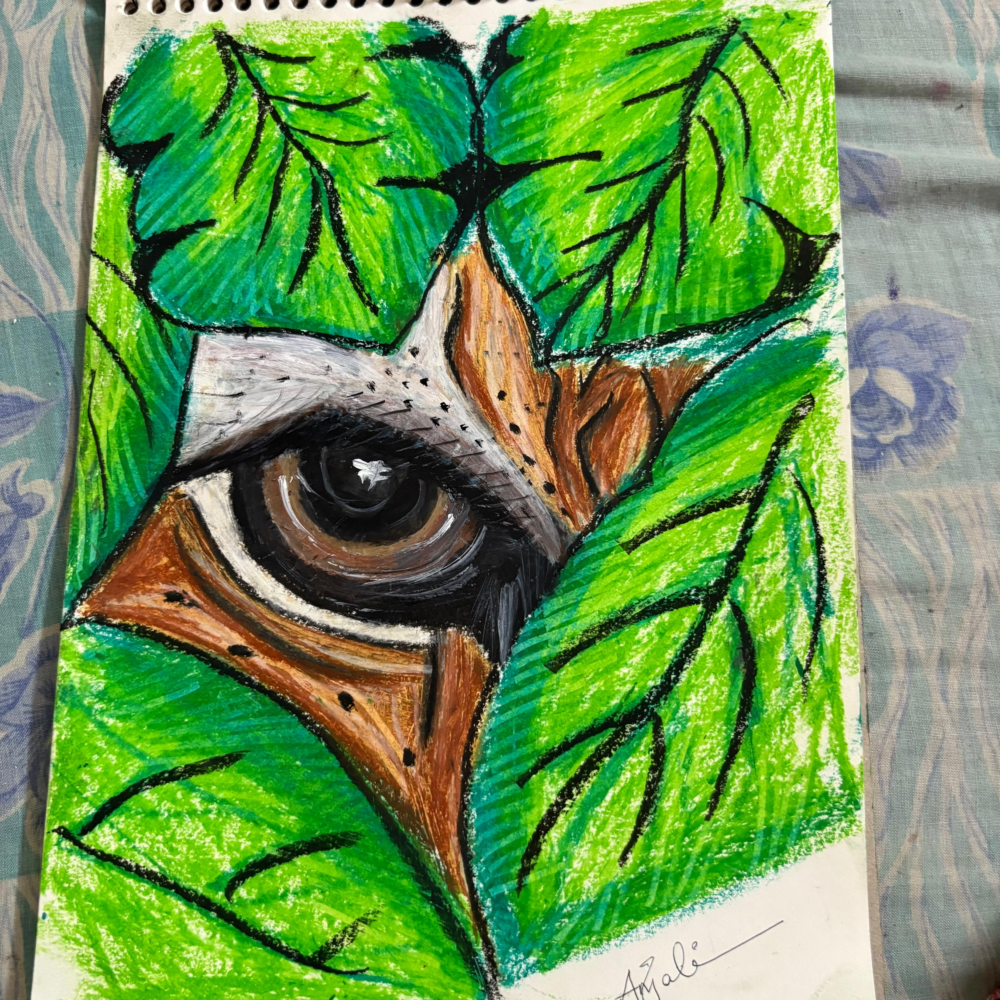

Software developer

Skills
Internships
Projects
Education
I have completed several internships with companies such as Amazon, HDLC, Oasis, and Forage, where I gained valuable experience by working on real-world problem statements and improving my problem-solving skills across different domains. My journey includes Android App Development at HDLC, Web Development and Designing at Oasis, a Virtual Internship with Forage, and most recently, an SDE Internship at Amazon, where I enhanced my technical and professional expertise.
Learn moreI have consistently developed my coding skills from my first year onward, showing steady improvement in problem-solving and performance.I have gained knowledge and hands-on experience in multiple programming languages such as C, Python, Java, and HTML. I actively practice coding on various platforms like leetcode,codechef,codeForces. I also participate in LeetCode Biweekly Contests, which helps me improve speed, accuracy, and problem-solving efficiency.
Learn moreI have earned certificates from various reputed organizations across different domains:
The app connects you to talented people.

The app connects you to talented people.

The app connects you to talented people.

The app connects you to talented people.
© Hemanjali Saride